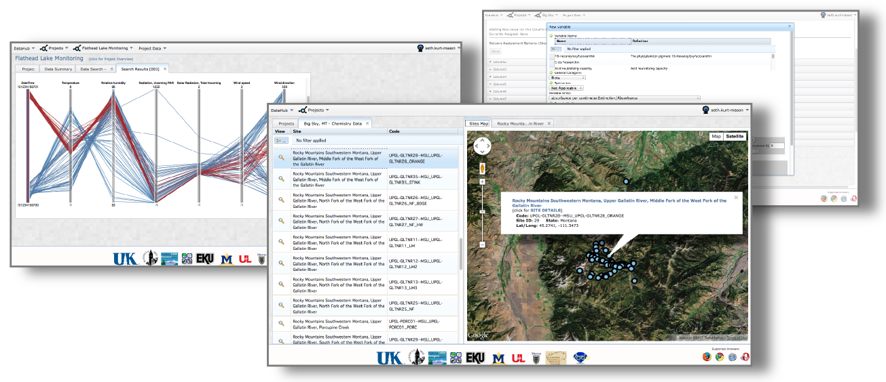

A web based data management solution using RESTful architecture and an extensible data model.
The Virtual Observatory and Ecological Informatics System (VOEIS) provides scientists and data managers with an end-to-end management solution for a wide variety of environmental data types. VOEIS provides a framework for data acquisition, quality assurance/control, visualization, and provenance tracking of temporally and spatially located data.
Open Source
VOEIS is available under the MIT open source license and is freely available to anyone interested in the source code. Feel free to install a version of the software on your own server, or customize the source code so that it suites your specific use-case needs. The most recent version of the VOEIS software is posted on GitHub:
Requirements

The VOEIS web application is compatible with any of the following web browsers:
Support

This project is generously funded by the National Science Foundation’s (NSF) Experimental Program to Stimulate Competitive Research (EPSCoR), a capacity building program to enhance researchers’ and institutions’ ability to compete for federal research funds. This project is supported jointly by funding from EPSCoR programs in Montana and Kentucky.